Projet: CENTRE SPORTIF DE MALLEY, LAUSANNE

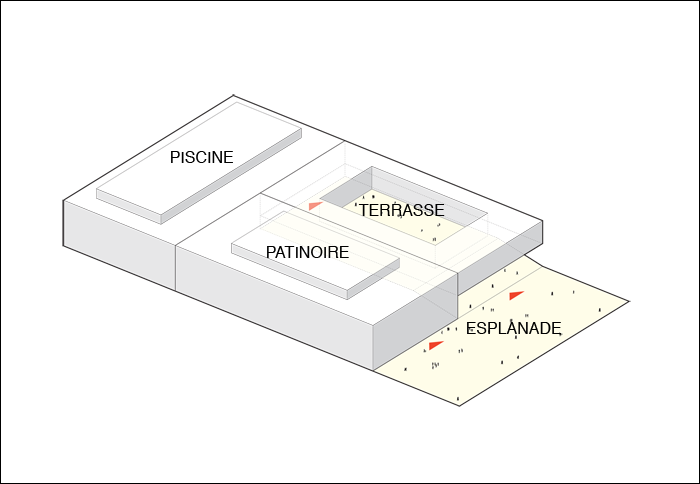
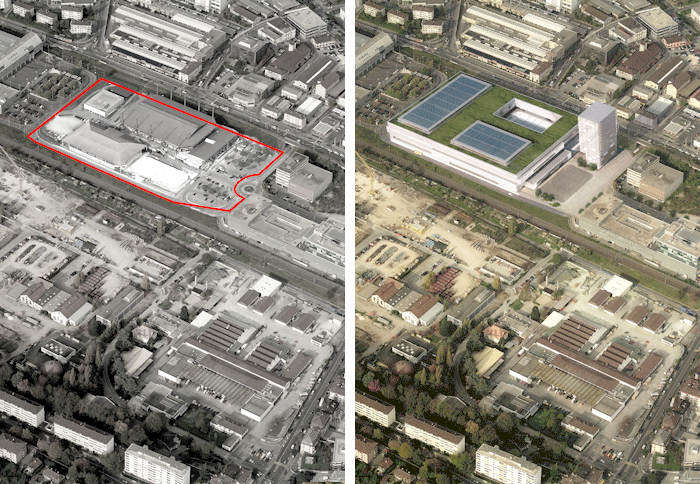

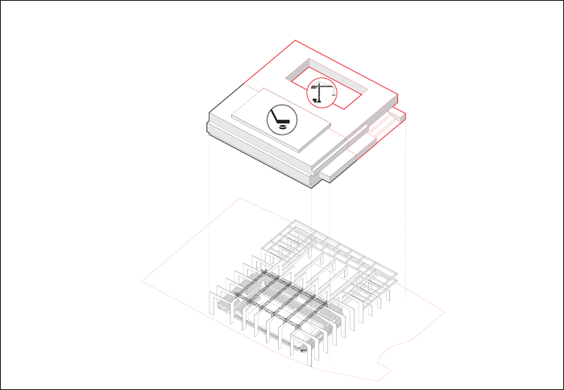
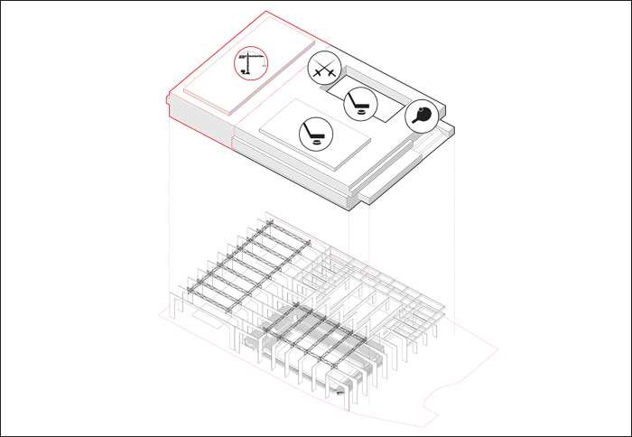
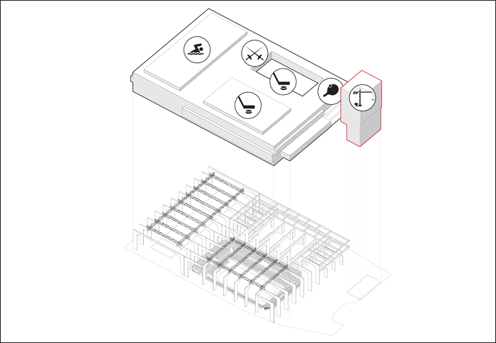
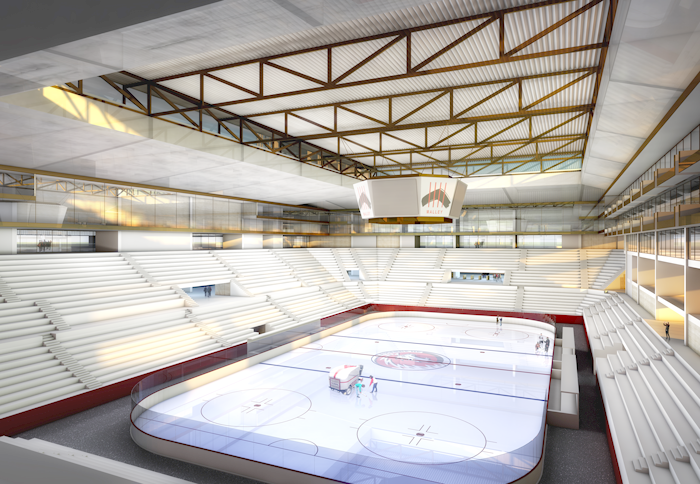
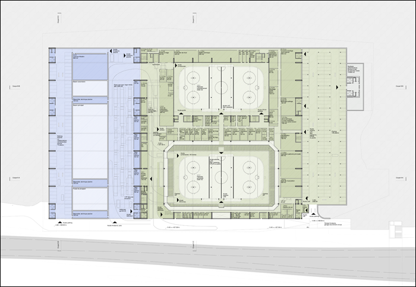

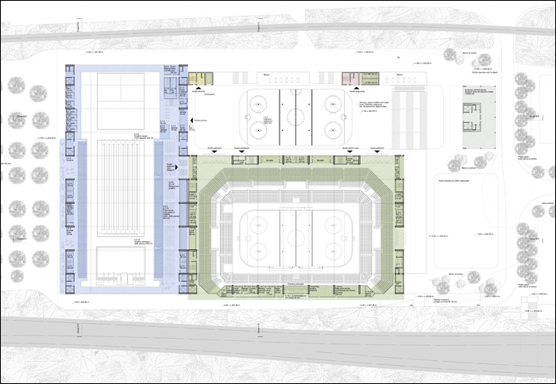
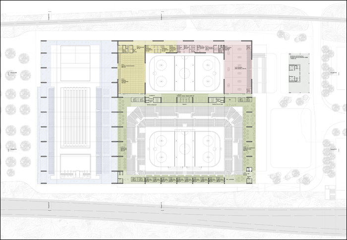
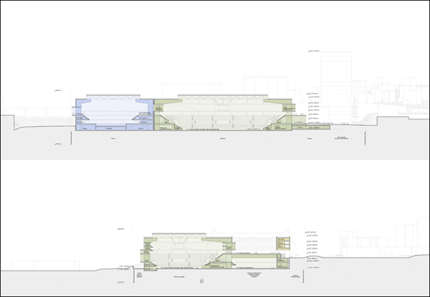
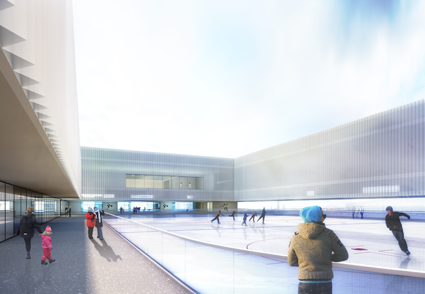
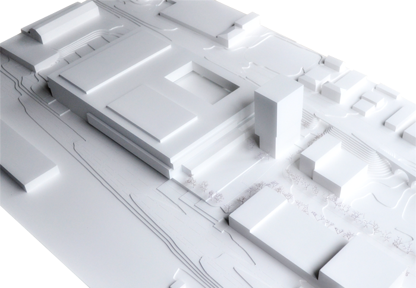
Projet: CENTRE SPORTIF DE MALLEY, LAUSANNE
Lieu: Communes de Renens et Prilly, Lausanne (VD)
Client: CIGM, Centre Intercommunal de Glace de Malley SA, Prilly
Programme: Patinoire (7’000-10’000 spectateurs), piscine olympique (2’000 spectateurs), halle de tennis de table et halle d’escrime
Budget: 206’000’000 CHF
Date: 2014
Type: concours ouvert
Team: NYX architectes, Basler & Hofmann AG (ingénieurs civils), ER Energies Rationnelles SA (technique du bâtiment), SIMA/BREER (architectes paysagistes)
Images: NYX architectes